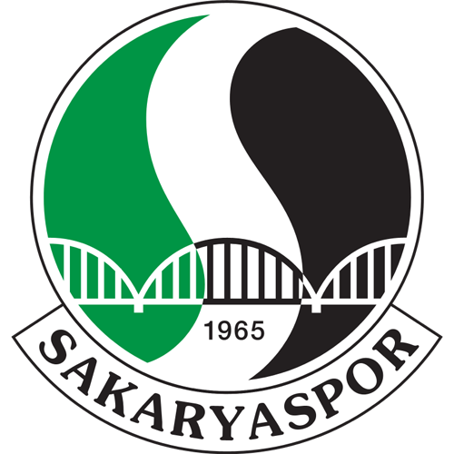

Sakaryaspor, Sakarya şehrinin en önemli spor kulüplerinden biridir. 1965 yılında kurulmuştur ve takımın renkleri yeşil-siyahtır. Özellikle taraftar kültürü ve coşkulu atmosferiyle Türkiye’nin dikkat çeken futbol kulüplerinden biridir.
Sakaryaspor taraftarları, takımlarına olan bağlılıklarıyla tanınır. Özellikle iç saha maçlarında oluşturdukları atmosfer oldukça dikkat çekicidir. Şehir halkı için Sakaryaspor sadece bir futbol takımı değil, aynı zamanda önemli bir kültürel değerdir.